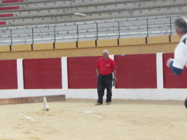

El terreno es de tierra sin obstáculos.


Se coloca la calva y unos troncos alejados para frenar los marros.
La calva es de madera y se coloca formando un ángulo de aproximadamente 130º. El marro tiene un peso mínimo de 1,5kg.
Cada equipo se compone de 4 jugadores, 3 titulares y un suplente.
Cada jugador tiene 30 tiradas. El orden de las mismas se establece por sorteo.

Se suma un punto al marcador del equipo cada vez que el marro impacte correctamente con la calva.
Si el jugador pisa la línea de tiro, su lanzamiento queda invalidado.

Hay un árbitro anotador y otro juez.

Las distancias de tiro y peso del marro varían con la categoría.